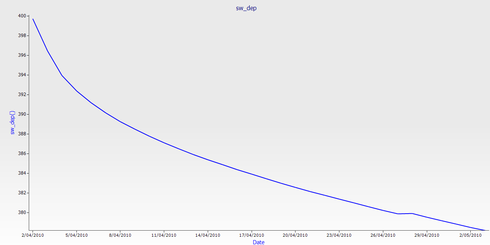

Scenario: Kingsthorpe Soil Water Evaporation Project
In this exercise you will model data from a real trial at Kingsthorpe, Queensland, Australia. Using observed data from the trial, you will create a met file, model three evaporation curves and compare the modelled output to the observed data.
For more background on the trial see this PowerPoint presentation.
Getting Started
Extract the Scenario zip from the documentation folder in the APSIM installation folder (C:\Program Files(x86)\Apsim-r[revision]\Documentation by default) to somewhere you can work on it (Documents or Desktop for instance). We'll be editing and saving files and your security settings may prevent you from saving to the install folder.
This scenario assumes familiarty with Excel and basic Windows functions such as renaming files. Step by step instructions are not given for these tasks. Further, the scenario has been designed for use in a class enviroment with a trainer. As such, some concepts may not be fully explained here. However, if you have successfully completed the basic exercises you should be able to complete the task without too much trouble.
Creating the Met File
The first step in modelling any trial is to ensure you have accurate climate data. The data you'll be working with was collected from a weather station at the trial site. The raw hourly data was processed into daily data and presented in the form you see here.
- Open the file Data.xlsx and click on the Weather sheet. .CSV files of the data are also provided for those who do not use Excel. Refer to those when you're asked to click a tab.
The first few lines look like this:
| 1/01/2010 |
28.5 |
19.5 |
0.2 |
2.6 |
13 |
18.1 |
|
|
|
| 2/01/2010 |
31.2 |
20.5 |
0.6 |
4.4 |
15 |
22.1 |
|
|
|
| 3/01/2010 |
33.6 |
22.3 |
0 |
5.8 |
20 |
24.3 |
|
|
|
| 4/01/2010 |
27.1 |
21.2 |
3.4 |
4.6 |
11 |
21.5 |
|
|
|
| 5/01/2010 |
27.8 |
18.4 |
0 |
3.6 |
14 |
19.2 |
|
|
|
| 6/01/2010 |
30.4 |
18.6 |
0 |
5.2 |
16 |
20.9 |
|
|
|
| 7/01/2010 |
30 |
20.7 |
0 |
6 |
15 |
20.3 |
|
|
|
| 8/01/2010 |
30.5 |
20.2 |
7.4 |
1.488427948 |
26 |
19.1 |
|
|
|
| 9/01/2010 |
31.0125 |
19.4125 |
0.2 |
1.524017467 |
31.0387 |
22.36807 |
357 |
73.67 |
30.36252161 |
| 10/01/2010 |
33.4625 |
14.935 |
0 |
1.855895197 |
31.39665 |
18.12882 |
248 |
52.9175 |
34.25864906 |
| 11/01/2010 |
32.665 |
17.0525 |
0 |
2.302183406 |
31.1444 |
19.55967 |
315 |
58.46 |
33.45821193 |
| 12/01/2010 |
32.7375 |
16.22 |
0 |
2.007423581 |
33.39598 |
19.56837 |
294 |
55.8875 |
35.01385634 |
| 13/01/2010 |
35.0375 |
17.115 |
0 |
6.348253275 |
31.1724 |
18.64869 |
213 |
51.7725 |
36.02044745 |
- You may recall there are six columns that APSIM requires in order to function. You can have other data such as vapour pressure or wind speed and access them via scripting, but APSIM will not use them. The columns are: year, day, mint, maxt, rain and radn. Respectivly they are the year, day of year, minimum and maximum temperatures (in oC), rainfall (in mm) and incoming solar radiation (in MJ/m2/day). While these columns are mandatory, their position is not; they can be in any order.
- Create a new sheet. It's always better to start a new sheet when creating a weather file so you don't overwrite your existing data.
- On the new sheet type in 'year' and 'day' (no quotes) in the top cell of the first two columns.
- Copy the max temp, min temp, rad and rain columns to the new sheet after the year and day columns.
- Rename max temp, min temp and rad to maxt, mint and radn respectivly.
- We don't need all those decimal places. Select all the columns with data (NOT the year and day columns), change the data type to Number and use the 'Decrease Decimal' option (Home -> Number under Excel 2007+) to reduce the number of decimals to one. Note this will not cause a loss of data, it only affects the display.
- You sheet should now look like the table below. Note that column names cannot contain spaces.
| |
|
28.5 |
19.5 |
0.2 |
13.0 |
| |
|
31.2 |
20.5 |
0.6 |
15.0 |
| |
|
33.6 |
22.3 |
0.0 |
20.0 |
| |
|
27.1 |
21.2 |
3.4 |
11.0 |
| |
|
27.8 |
18.4 |
0.0 |
14.0 |
| |
|
30.4 |
18.6 |
0.0 |
16.0 |
| |
|
30.0 |
20.7 |
0.0 |
15.0 |
| |
|
30.5 |
20.2 |
7.4 |
26.0 |
| |
|
31.0 |
19.4 |
0.2 |
31.0 |
| |
|
33.5 |
14.9 |
0.0 |
31.4 |
| |
|
32.7 |
17.1 |
0.0 |
31.1 |
| |
|
32.7 |
16.2 |
0.0 |
33.4 |
| |
|
35.0 |
17.1 |
0.0 |
31.2 |
- We'll use a formula to calculate both of these. This will allow you to copy the formula for all of your days no matter how many years you have. Type this formula in the first cell beneath day: =Weather!A2 - DATE(2010,1,0) where Weather is the worksheet containing the weather data, A2 is the cell containg the first Date and 2010 is the first year of your weather data. You may need to change the format of the columns from 'Date' to 'General'. In the 'year' column use the formula: =YEAR(Weather!A2) again, A2 is the cell containing the first Date and Weather is the sheet containing the source data.
- Copy the two formulae down to complete the columns.
- Now we need to add units. Every column in the file must have an associated unit (note this does not allow you to change the units APSIM uses. For example, temperatures MUST be in Celcius, you can't make them Farenheight by putting oF in the units field. Add another row under the headings but before the first row of data so it looks like below. Note that unitless columns need to have empty brackets.
| () |
() |
(oC) |
(oC)
|
(mm) |
(MJ/m^2) |
2010
|
1 |
28.5 |
19.5 |
0.2 |
13.0 |
| 2010 |
2 |
31.2 |
20.5 |
0.6 |
15.0 |
| 2010 |
3 |
33.6 |
22.3 |
0.0 |
20.0 |
| 2010 |
4 |
27.1 |
21.2 |
3.4 |
11.0 |
- There's two more things we need to add. Insert two rows at the top of the sheet. In the first row type '[weather.met.weather]' (no quotes). This indicates to APSIM that this is a weather file. In the second line, type 'latitude = -27.478' (no quotes). You must provide a latitude as APSIM uses it to calculate day length. A longitude is recommended, but not required. If you do put one in, it goes on a seperate line.
- Select all the data and make it right justified. This is not required, but it can stop alignment problems later.
- Make sure there is some space between the columns! In the table above there is a fair bit of white space between the data in each column and all the data is right justified. If there is not enough space Excel will save the final output file without spaces between the columns which will break the file. This is why we right justified the text; to make sure it doesn't bunch together.
- Save the file.
- Click File -> Save As. Choose Formatted text (space delimited) (.prn) from the drop down list.
- Save the file as Weather. You will get a few warnings about losing formatting. Click OK through them all. This is why you saved the file before changing the format.
- Click File -> Close. Note that now you're working in the .prn file, not your original file. Any changes made here will not reflect in the source file. The file must also be closed before loading into APSIM or you'll get an error. It will ask if you want to save, say no.
- Go to the folder where you saved the file. It will be called Weather.prn. Change the name to Weather.met. You may need to unhide file extensions for this to work.
- Our file needs a couple of constants in order to be complete: TAV (annual average ambient temperature) and AMP (annual amplitude of mean monthly temperature). We have provided a tool here so that you don't need to enter these yourself. Run the tool, choose the file you've just created and click Go. It will insert the required numbers for you. See the Utilities page for more information.
The met file is now ready to be loaded into APSIM as usual. Note that we have removed the Date column from the original data. The met component expects numbers only so characters like the slash cannot be used.
Building the First Simulation
- Open APSIM. Click 'New' and choose 'Continuous Wheat' as the base simulation. We use this one because it has all the nodes we need plus a few more that we'll delete. Save it as 'Scenario.apsim' in the same folder as your met file.
- This is a bare soil trial so we don't need a crop or fertiliser. Delete the fertiliser, wheat and Manager folder nodes.
- We're modelling three curves starting in April, May and September. Rename your simulation to April and save. It should look like this:
- Click on met and choose the Weather.met file you just created. If it doesn't load check that the format is right and that there is enough space between columns.
- Click on clock. Change start date to 02/04/2010 and end date to 03/05/2010.
- We now need to change the soil parameters to those that were measured in the field. Open the Data.xlsx file if you don't already have it and go to the Soil tab. Click the Water node under Soil in your simulation, remove the crops and enter the values in the table. Leave the KS column blank. Note that the soil analysis has a lot of extra data that we won't be using.
- Click on SoilWater. Set the values equal to the following table. These values were calculated for the current soil using measured data, but that process is not part of this exercise.
| Summer Cona: |
5.3 |
| Summer U: |
2 |
| Summer Date: |
1-nov |
| Winter Cona: |
3.71 |
| Winter U: |
2 |
| Winter Date: |
1-apr |
| Diffusivity Constant: |
40 |
| Diffusivity Slope: |
16 |
| Soil albedo: |
0.12 |
| Bare soil runoff curve number: |
50 |
| Max. reduction in curve number due to cover: |
20 |
| Cover for max curve number reduction: |
0.8 |
| Slope: |
|
| Discharge width: |
|
| Catchment area: |
|
| Depth |
SWCON
|
MWCON |
| 0-10 |
0.400 |
|
| 10-30 |
0.400 |
|
| 30-60 |
0.400 |
|
| 60-80 |
0.000 |
0.000 |
We're setting SWCON and MWCON to 0 for the bottom layer to reflect the fact there is no drainage out of the lysimeter (steel plate).
- Delete the Initial water node. We will be specifying starting water content by layer.
- Click Initial nitrogen. Set all starting N to 0, we're not looking at N in this trial. Change the layers to use the same structure you had in the water node.
- Add the following values to the SW column:
| 0-10 |
0.569 |
| 10-30 |
0.523 |
| 30-60 |
0.492 |
| 60-80 |
0.481 |
We want the simulation to start at the same soil water content that the observed soil did. These values were found by running each curve with a different starting value and using the one that matched the observed value. For the full trial approximately 20,000 simulations were run to determine starting conditions for all curves. To save time, the final values are provided here.
- Change SurfaceOrganicMatter -> Initial surface residue to 0.
- Delete all output variables EXCEPT Date and add sw_dep().
- Change Reporting Frequency to end_day.
- Run the simulation to ensure there are no errors.
Preparing Observed Data
Using observed data in APSIM is very similar to creating a met file. You will need a table containing your data with headings that match the outputs in APSIM as well as a row of units under the headings. You will also need a column that contains data that APSIM can use to match observed and modelled data. In this example, Date will be the column we match on.
In the Data.xlsx file, there are two sheets, Kings daily and Kings sw_dep. Kings daily is the raw data gathered from the load meters in the lysimeters. There are also four columns for a correction factor (one for each rep), columns for sum of correction factors and columns for the corrected mass. During the trial there were periods were the load cells did not measure correctly (some factors included broken regulators, flooding, adding known weight for load cell testing and local fauna standing on the cells when a reading was taken). These errors showed in the data as large drops or spikes that rectified themselves after a day or two. The correction factor used removes these large deltas. You will notice periods of straight lines in the graph. These period represent missing data; either due to broken or missing load cells (they were removed from time to time for repairs) or due to the data being so noisy it was not possible to extract a reliable signal from it.
With any data set there are always sources of error that need to be accounted for before trying to model it. Don't forget that both the model and the real data can be sources of error. If your modelled results do not give a good fit for your observed results it can be a good idea to check that your measured data are as free of errors as possible. In fact, you can expect that most of your time modelling will actually be spent cleaning up data. It took a week or two to build the model of this trial. It took nearly three months to clean the data, and even then a lot was rejected due to unquantifiable errors. In the end 38 drying curves were selected from a maximum of just over 60 possible curves. The other curves were rejected due to excessive errors in measured data.
- Open Data.xlsx and click the Kings sw_dep tab. The data you will be using has already been error corrected.
- We will be modelling the average of all four reps. Rename the mean column to sw_dep(). By having the names of the columns in both observed and modelled data the same APSIM can plot them on the same graph.
- Adjust the number of decimal places to 3.
- Add another row under the headings and add the units. () For date, (mm) for the rest.
- The columns are a little close together. Adjust the column witdth so we'll get enough space between them when we save.
- Save the file.
- Use Save As to save the file as 'observed.prn'.
- Close the file in Excel.
Adding Observed Data
Now that we have our observed data in a format APSIM can handle, we want to graph it on the same plot as our modelled data to see how well the model holds up.
- Open Scenario.apsim if it isn't already.
- Open the Graph toolbox and drop an XY plot onto the 'April' simulation node.
- Open the XY node and click 'Plot'.
- Make the X variable Date and Y variable sw_dep(). Change 'point type' to 'none'.
- Rename the plot to sw_dep. It should look like this:

- Copy the plot node and paste on the sw_dep graph to create a second node. Rename the first Plot to predicted and the second to observed.
- We have all the observed data in a single file but we only want to graph part of it. Drop a Filter component on the observed node (Graph > GraphBits > Filter).
- Open the observed node and cut the ApsimFileReader node. Paste it onto the Filter node. It should now look like this:
- Click on ApsimFileReader and select your observerd.prn file. If the file is in the correct format you will see your data in a list.
- Click on the filter node. In 'Enter filter expression' enter the following: Date >= #4/2/2010# AND Date <= #5/3/2010#. Note that the dates are now in US format (MM/DD/YYYY) and that the hashes are required to denote a date. For more information on the filter node, refer to the Filter documentation.
- Click the observed node and change 'point type' to 'circle' and 'line type' to 'none'.
- Click on the sw_dep plot node and you should see the following graph:
If your graph does not look like this, check the previous steps; you've proabably missed something.
Build the Other Simulations
The hard work is done, the other two simulations will use this one as a base and all we'll change is the start and end dates of the simulation, the filter expression to match those dates and the starting water.
- Create two linked simulations using April as the base. Call one May and the other September. Unlink the clock node, the Initial nitrogen node under soil and the filter on the graph node for both simulations.
- Change the start and end dates of May to 05/05/2010 and 02/07/2010 respectivly. Change September to 11/09/2010 and 06/10/2010.
- Click on the unlinked filter node. For May, change the filter expression to Date >= #5/5/2010# AND Date <= #7/1/2010#. Again, note the day and month are reversed.
- For September the filter expression becomes: Date >= #9/11/2010# AND Date <= #10/6/2010#.
- Change the SW column in Initial nitrogen to
for the May simulation and
for September.
- Run the two new simulations and compare your results with the graphs below.